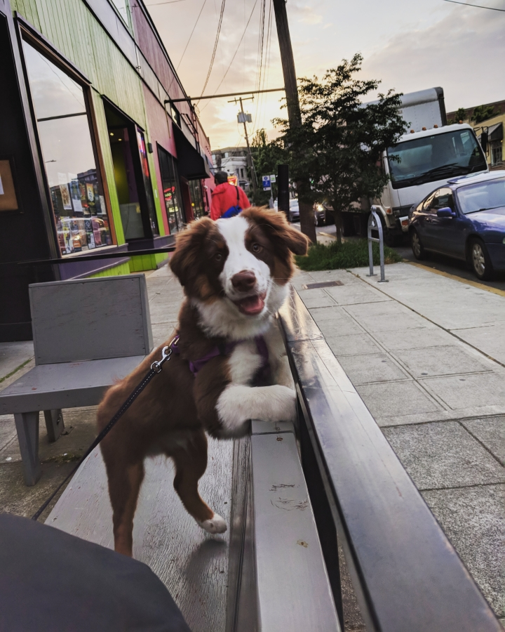
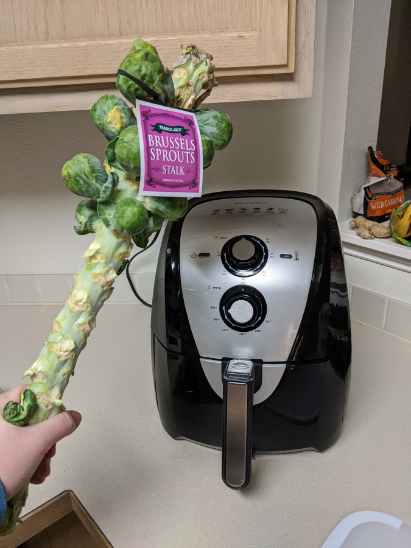
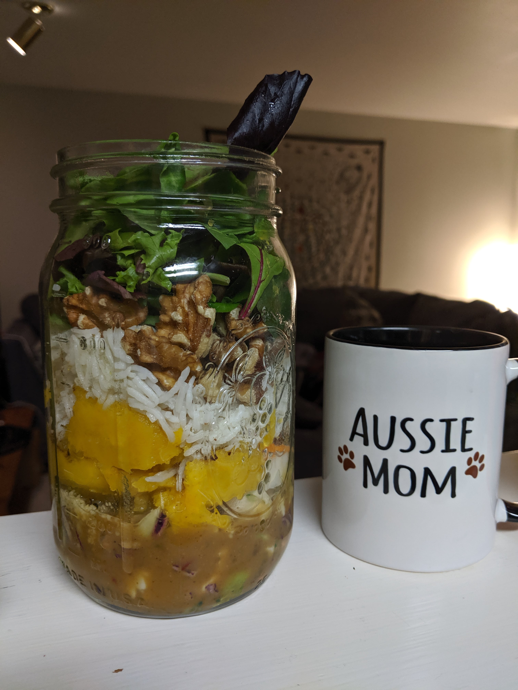

This is Maru!

Maru is a red tri-color Australian Shepherd. This picture is from when he was a puppy, about 6 months old.
He loves going for walks and going to the dog park, and he doesn't like to sit at home for very long. He also requires a lot of training, because he gets bored quite easily.
The Kitchen

Before adopting Maru, we would often spend hours cooking in the kitchen. But, with the responsibilities of puppy parenting plus going to school, we quickly learned to appreciate the benefits of kitchen short cuts!
We rely heavily on our air fryer, instant pot, and our rice cooker to save a ton of time and create food that used to take hours and too much attention.
Our Recipes

In this recipe blog, you will only find meals and snacks that are either simple to prep for a whole week, or very quick to make.
This site focuses on primarily plant-based and relatively healthy foods, but we often save time by buying some food that is partially prepared, such as cauliflower rice and chopped veggies.